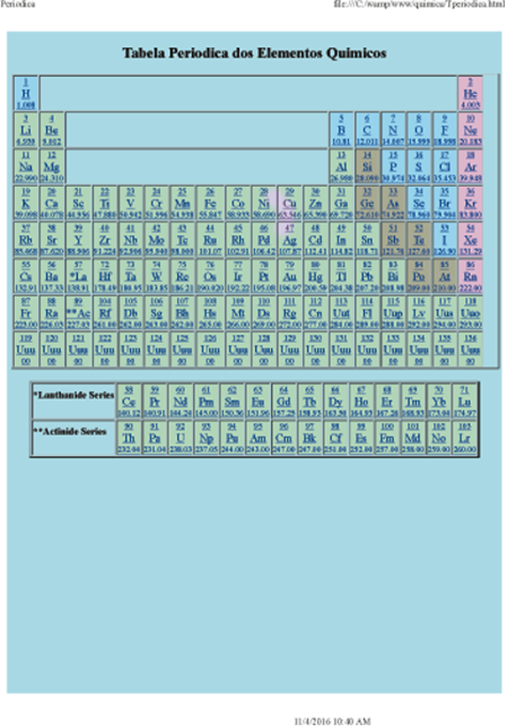
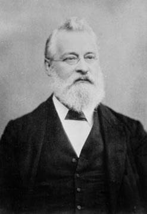

Tabela Periodica dos ElementosQuimicos

Tabela Periódica
A tabela periódica é um arranjo sistemático dos elementos químicos ordenados por seus números atômicos, configuração eletrônica e recorrência das propriedades periódicas.
Essa ordenação mostra tendências periódicas, como elementos com comportamentos semelhantes na mesma coluna. Ele também mostra quatro blocos retangulares com propriedades químicas semelhantes.
Em geral, dentro de uma linha (ponto) os elementos são metálicos à esquerda e não metálicos à direita.
As linhas da tabela são chamadas de períodos; as colunas são chamadas de grupos.
Elementos com número atômico de 95 a 136 foram sintetizados apenas em reatores laboratoriais ou nucleares. A síntese de elementos com números atômicos maiores foi buscada.
Vários elementos radioativos sintéticos ou de ocorrência natural também foram produzidos em laboratórios
.
Tabela Periodica

John Newlands
História:
A história da tabela periódica reflete mais de um século de crescimento na compreensão das propriedades químicas. O evento mais importante de sua história ocorreu em 1869, quando a mesa foi publicada por Dmitri Mendeleev, que baseava-se em descobertas anteriores de cientistas como Antoine-Laurent de Lavoisier e John Newlands, mas que, no entanto, geralmente recebem crédito pelo seu desenvolvimento.

Dmitri Mendeleev
Definições importantes
Número atômico:
O número atômico ou número de prótons de um elemento químico é o número de prótons encontrados no núcleo de um átomo. É idêntico ao número de carga do núcleo. O número atômico identifica exclusivamente um elemento químico. Em um átomo não carregado, o número atômico também é igual ao número de elétrons.
Número de Massa:
Número de massa, em física nuclear, ou química, a soma dos números de prótons e nêutrons presentes no núcleo de um átomo. O número de massa é comumente citado na distinção entre os isótopos de um elemento, todos os quais têm o mesmo número atômico (número de prótons) e são representados pelo mesmo símbolo literal; por exemplo, os dois isótopos de urânio mais conhecidos (aqueles com números de massa 235 e 238) são designados por urânio-235 (simbolizado por 235U) e urânio-238 (238U).
Elementos Isotopos:
Cada uma das duas ou mais formas do mesmo elemento que contém números iguais de prótons, mas diferentes números de nêutrons em seus núcleos e, portanto, diferem na massa atômica relativa, mas não nas propriedades químicas; em particular, uma forma radioativa de um elemento.